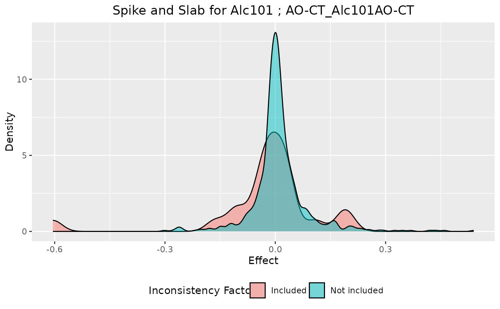
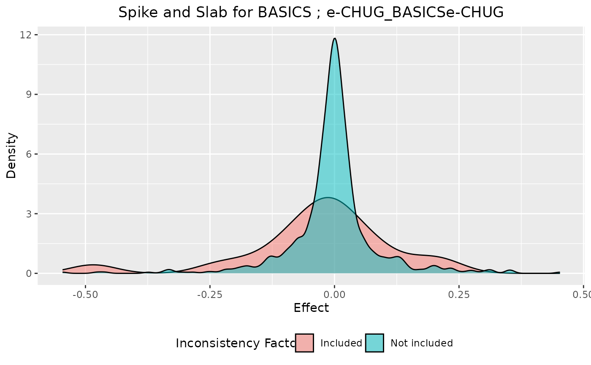
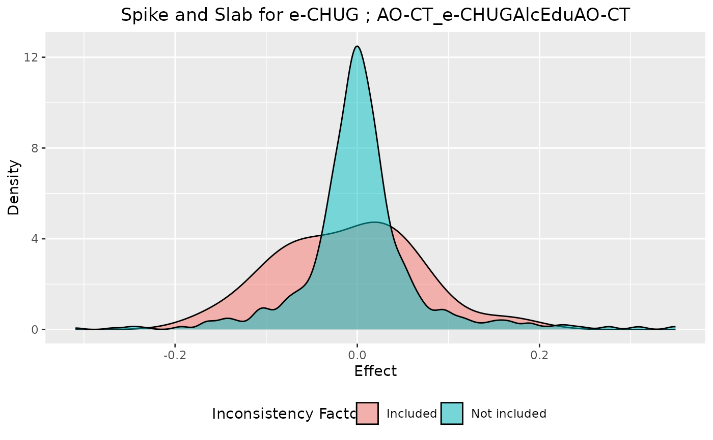
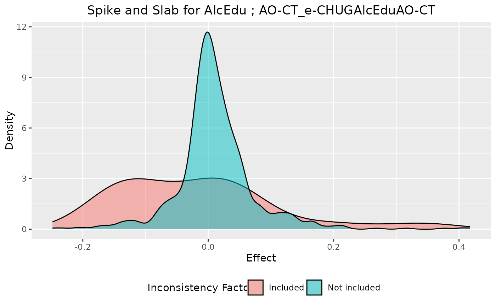
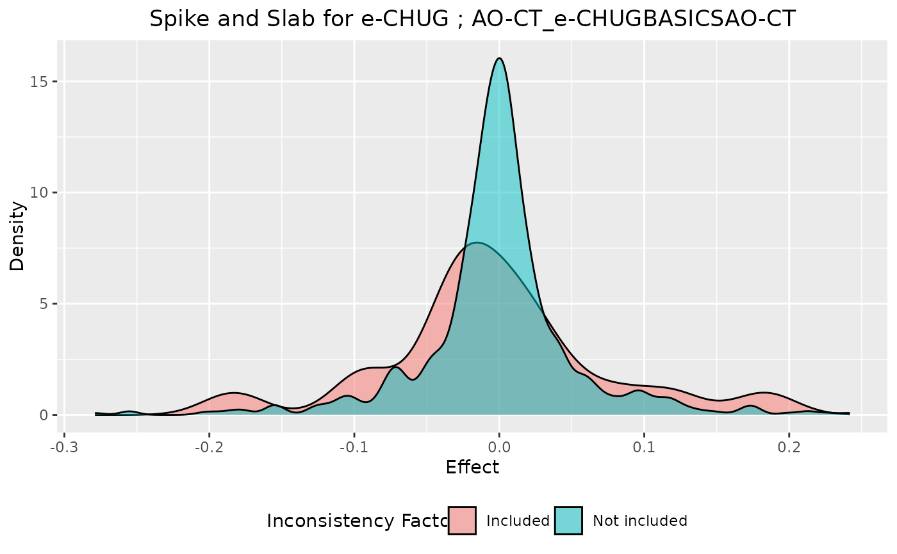
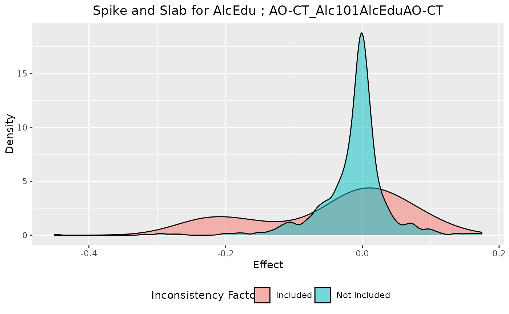

The function visualizes the inconsistency factor's effect when the inconsistency factor is included in the Network Meta-Analysis (NMA) model and when is not.
Details
The function creates two density plots for each inconsistency factor based on the inconsistency
factors' effects, which are obtained from the ssifs model. The former visualizes the effect when the
inconsistency factor is included in the NMA model (spike), while the latter when
is not (slab). A good mixing of the SSIFS model indicates that the spike has high density for values
close to zero whereas the slab is flatter.
Examples
data(Alcohol)
TE <- Alcohol$TE
seTE <- Alcohol$seTE
studlab <- Alcohol$studyid
treat1 <- Alcohol$treat2
treat2 <- Alcohol$treat1
# Stochastic Search Inconsistency Factor Selection using intervention AO-CT as reference.
m <- ssifs(TE, seTE, treat1, treat2, studlab, ref = "AO-CT",
M = 500, B = 100, M_pilot = 300, B_pilot = 100)
spike.slab(m)
#> $`BASICS ; Alc101_BASICSAlc101`
#>
#> $`Alc101 ; AO-CT_Alc101AO-CT`

#>
#> $`BASICS ; e-CHUG_BASICSe-CHUG`

#>
#> $`THRIVE ; Active-CT_THRIVEActive-CT`
#>
#> $`e-CHUG ; AO-CT_e-CHUGAlcEduAO-CT`

#>
#> $`AlcEdu ; AO-CT_e-CHUGAlcEduAO-CT`

#>
#> $`e-CHUG ; AO-CT_e-CHUGBASICSAO-CT`

#>
#> $`BASICS ; AO-CT_e-CHUGBASICSAO-CT`
#>
#> $`AlcEdu ; AO-CT_Alc101AlcEduAO-CT`

#>
#> $`Alc101 ; AO-CT_Alc101AlcEduAO-CT`
 #>
#>